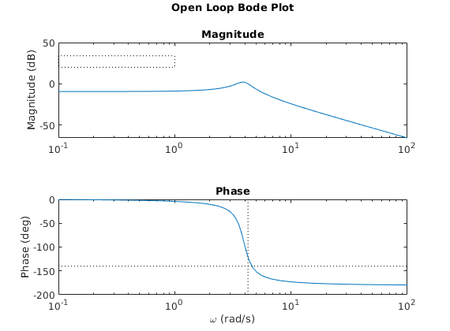
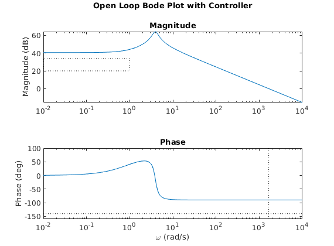
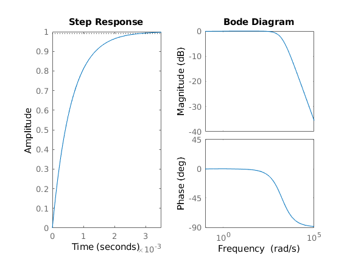
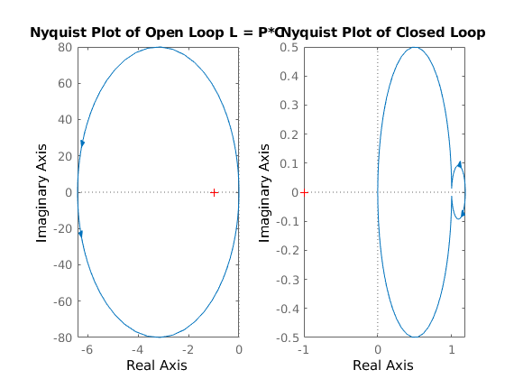
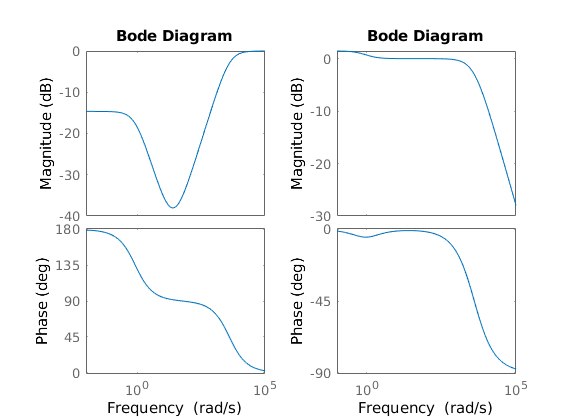

ES155 Homework 8
Contents
Problem 1
clear; clc; % Given requirements maxSSerr = 0.01; % 1% at zero frequency minPM = 30 * pi / 180; % 30 degrees in radians maxFreqError = 0.25; % Bandwidth defined as max freq with less than 25% error % Input the Plant transfer functions P_1a = tf(1, [1, 10, 3, 10]) P_1b = tf([1.5, 0.75], [1, 0.7, 0.05])
P_1a =
1
-----------------------
s^3 + 10 s^2 + 3 s + 10
Continuous-time transfer function.
P_1b =
1.5 s + 0.75
------------------
s^2 + 0.7 s + 0.05
Continuous-time transfer function.
1.a Disk Drive
For SSerr = 1/(1 + L(0)) <= 0.01 requires L(0) > 100 (+40dB) P_1a(0) = -20dB, so need to add +60dB. Adding a "safety margin", try +70dB (3162.3) This results in a phase margin of -53 degrees. Add a zero to improve this. Default frequency of 1 gives PM of 9.14 degrees. Moving frequency to 3.5 maximized the PM to 12 degrees. This required a second zero to achieve a 90 degree PM (zero frequency at 1) However, this no longer constitutes a PID controller, as there are two zeros and no poles. Introducing an integrator can allow the system to reach a steady state error of 0. Simply including an integrator and a zero at 1 rad/s results in 0 steady state error with a 94 degree phase margin. Thus,
C_1a = tf([1, 1], [1, 0]) L_1a = P_1a*C_1a sys_1a = feedback(L_1a, 1) % Check that design goals were met SSerr = 1 - dcgain(sys_1a) dbdrop = mag2db(maxFreqError); BW = bandwidth(sys_1a, dbdrop) [Gm, Pm] = margin(L_1a) % Computed with Open Loop if (SSerr < maxSSerr) & (Pm > minPM) & isstable(sys_1a) fprintf("The system satisfies the requirements\n") else fprintf("The system failed to satisfy the requirements\n") end
C_1a =
s + 1
-----
s
Continuous-time transfer function.
L_1a =
s + 1
---------------------------
s^4 + 10 s^3 + 3 s^2 + 10 s
Continuous-time transfer function.
sys_1a =
s + 1
-------------------------------
s^4 + 10 s^3 + 3 s^2 + 11 s + 1
Continuous-time transfer function.
SSerr =
0
BW =
1.2651
Gm =
2.1699
Pm =
94.0404
The system satisfies the requirements
1.b Drug Administration
Again, want L(0) > 100 (+40dB). P_1b(0) = 15 (+23.5dB), so need to add about +20dB (10). The resulting phase margin is 90.8 degrees, so the controller is fine
C_1b = 10 L_1b = P_1b*C_1b sys_1b = feedback(L_1b, 1) % Check that design goals were met SSerr = 1 - dcgain(sys_1b) dbdrop = mag2db(maxFreqError); BW = bandwidth(sys_1b, dbdrop) [Gm, Pm] = margin(L_1b) % Computed with Open Loop if (SSerr < maxSSerr) & (Pm > minPM) & isstable(sys_1b) fprintf("The system satisfies the requirements\n") else fprintf("The system failed to satisfy the requirements\n") end
C_1b =
10
L_1b =
15 s + 7.5
------------------
s^2 + 0.7 s + 0.05
Continuous-time transfer function.
sys_1b =
15 s + 7.5
-------------------
s^2 + 15.7 s + 7.55
Continuous-time transfer function.
SSerr =
0.0066
BW =
58.4553
Gm =
Inf
Pm =
90.7636
The system satisfies the requirements
Problem 2
clear; clc; % Given Constants g = 9.8; l = 0.05; m = 1.5; J = 0.0475; c = 0.05; r = 0.25; % The given plant transfer function P_2 = tf(r, [J, c, m*g*l]) % Design Goals maxSSerr = 0.02 % SS error < 2% BWerr = 0.1 % 10% tracking bandwidth from 0 to 1 rad/s minBW = 1 minPM = 40 % Phase Margin > 40 degrees % Use controlSystemDesigner(P2) %Want SSerr = 1/(1 + L(0)) < 0.02, so L(0) > 50 (+34dB) % The open loop P(0) gain is 0.3401 (-9.4dB), so need to add >44 dB of gain % Try +50dB = 316.28 % Then to acheive BW tracking, need to have T = L(s)/(1 + L(s)) < 0.1 up to % s = 1. Assuming large L(s), this gives L(s) > 10 (+20dB). This is % satisfied. % To improve the phase margin, need to add a zero at s = 1. This gives a % 90 degree phase margin. C_2 = 316.28 * tf([1,1],1) L_2 = P_2*C_2 sys_2 = feedback(L_2, 1) % Check SSerr = 1 - dcgain(sys_2) dbdrop = mag2db(BWerr); BW = bandwidth(sys_2, dbdrop) [Gm, Pm] = margin(L_2) % Computed with Open Loop if (SSerr < maxSSerr) & (Pm > minPM) & (BW > minBW) fprintf("The system satisfies the requirements\n") else fprintf("The system failed to satisfy the requirements\n") end
P_2 =
0.25
---------------------------
0.0475 s^2 + 0.05 s + 0.735
Continuous-time transfer function.
maxSSerr =
0.0200
BWerr =
0.1000
minBW =
1
minPM =
40
C_2 =
316.3 s + 316.3
Continuous-time transfer function.
L_2 =
79.07 s + 79.07
---------------------------
0.0475 s^2 + 0.05 s + 0.735
Continuous-time transfer function.
sys_2 =
79.07 s + 79.07
---------------------------
0.0475 s^2 + 79.12 s + 79.8
Continuous-time transfer function.
SSerr =
0.0092
BW =
1.6718e+04
Gm =
Inf
Pm =
90.0018
The system satisfies the requirements
2.a Open Loop Bode Plot
% get the bode plot values [mag, phase, wout] = bode(P_2); mag = reshape(mag, [length(mag), 1]); phase = reshape(phase, [length(phase), 1]); % plot figure(1); clf; subplot(2,1,1) semilogx(wout, mag2db(mag)) title({'Open Loop Bode Plot', '', 'Magnitude'}) ylabel('Magnitude (dB)') subplot(2,1,2) semilogx(wout, phase) title("Phase") xlabel('\omega (rad/s)') ylabel('Phase (deg)') % given the desired tracing error, compute the necessary gain in the BW % T = L(s)/(1 + L(s)) <= BWerr, so L(s) > 1/BWerr in the BW BWgain = 1/BWerr % given the desired steady state error, compute necessary gain at zero % frequency. S = 1/(1 + L(s)) <= SSerr, so L(s) > 1/SSerr SSgain = 1/maxSSerr subplot(2,1,1) Xlim = xlim; x = Xlim(1); y = mag2db(BWgain); w = minBW - x; h = mag2db(SSgain) - y; rectangle('Position', [x,y,w,h], 'LineStyle', ':') % Show phase margin line [Gm,Pm,Wcg,Wcp] = margin(P_2); phaseAtMargin = -180 + minPM; subplot(2,1,2) Ylim = ylim; hold on; plot([Xlim(1), Xlim(2)], [phaseAtMargin, phaseAtMargin], ':k') plot([Wcp, Wcp], [Ylim(1), Ylim(2)], ':k') hold off;
BWgain =
10
SSgain =
50
 2.b Show that assumptions are met
% get the bode plot values [mag, phase, wout] = bode(L_2, {10^-2, 10^4}); mag = reshape(mag, [length(mag), 1]); phase = reshape(phase, [length(phase), 1]); % plot figure(2); clf; subplot(2,1,1) semilogx(wout, mag2db(mag)) title({'Open Loop Bode Plot with Controller', '', 'Magnitude'}) ylabel('Magnitude (dB)') subplot(2,1,2) semilogx(wout, phase) title("Phase") xlabel('\omega (rad/s)') ylabel('Phase (deg)') % given the desired tracing error, compute the necessary gain in the BW % T = L(s)/(1 + L(s)) <= BWerr, so L(s) > 1/BWerr in the BW BWgain = 1/BWerr % given the desired steady state error, compute necessary gain at zero % frequency. S = 1/(1 + L(s)) <= SSerr, so L(s) > 1/SSerr SSgain = 1/maxSSerr subplot(2,1,1) Xlim = xlim; x = Xlim(1); y = mag2db(BWgain); w = minBW - x; h = mag2db(SSgain) - y; rectangle('Position', [x,y,w,h], 'LineStyle', ':') % Show phase margin line [Gm,Pm,Wcg,Wcp] = margin(L_2); phaseAtMargin = -180 + minPM; subplot(2,1,2) hold on; plot([Xlim(1), Xlim(2)], [phaseAtMargin, phaseAtMargin], ':k') Ylim = ylim; Ylim = [Ylim(1) - 10, Ylim(2)]; ylim(Ylim); plot([Wcp, Wcp], [Ylim(1), Ylim(2)], ':k') hold off;
BWgain =
10
SSgain =
50
 2.3 Step and Frequency Response of Closed Loop
figure(3);clf; subplot(1,2,1); step(sys_2) subplot(1,2,2); bodeplot(sys_2) stepinfo(sys_2) SSerr
ans =
struct with fields:
RiseTime: 0.0013
SettlingTime: 0.0021
SettlingMin: 0.8953
SettlingMax: 0.9989
Overshoot: 0.8180
Undershoot: 0
Peak: 0.9989
PeakTime: 0.0041
SSerr =
0.0092
 Problem 3
clear; clc; % Given constants k = 4000; r = 25; P_3 = tf(k, [1, 0, -r^2]) % The system has two poles, so to stabalize it, add a zero. Adding a zero % at frequency = 1 stabilizes it. C_3 = tf([1, 1], 1) L_3 = P_3*C_3 sys_3 = feedback(L_3, 1) % Check if isstable(sys_3) fprintf("The system was stabilized\n") else fprintf("The system was not stabilized\n") end
P_3 =
4000
---------
s^2 - 625
Continuous-time transfer function.
C_3 =
s + 1
Continuous-time transfer function.
L_3 =
4000 s + 4000
-------------
s^2 - 625
Continuous-time transfer function.
sys_3 =
4000 s + 4000
-------------------
s^2 + 4000 s + 3375
Continuous-time transfer function.
The system was stabilized
3.a Compute Poles and Zeros
% Open Loop fprintf("Open Loop zeros, poles, and gain\n") [L_3_n, L_3_d] = tfdata(L_3, 'v'); [z, p, k] = tf2zpk(L_3_n, L_3_d) % Closed Loop fprintf("Closed Loop zeros, poles, and gain\n") [sys_3_n, sys_3_d] = tfdata(sys_3, 'v'); [z, p, k] = tf2zpk(sys_3_n, sys_3_d)
Open Loop zeros, poles, and gain
z =
-1
p =
25.0000
-25.0000
k =
4000
Closed Loop zeros, poles, and gain
z =
-1
p =
1.0e+03 *
-3.9992
-0.0008
k =
4000
3.b Nyquist Plot
The open loop system actually does work, as the encirclement is CCW, so N still equals 0. The closed loop shows that the system is in fact stable.
figure(4); clf; subplot(1,2,1) nyquist(L_3) title("Nyquist Plot of Open Loop L = P*C") subplot(1,2,2) nyquist(sys_3) title("Nyquist Plot of Closed Loop")
3.c Bode Plot
S = 1/(1 + L_3) T = L_3/(1 + L_3) figure(5); clf; subplot(1,2,1) bode(S) subplot(1,2,2) bode(T)
S =
s^2 - 625
-------------------
s^2 + 4000 s + 3375
Continuous-time transfer function.
T =
4000 s^3 + 4000 s^2 - 2.5e06 s - 2.5e06
-----------------------------------------------
s^4 + 4000 s^3 + 2750 s^2 - 2.5e06 s - 2.109e06
Continuous-time transfer function.
